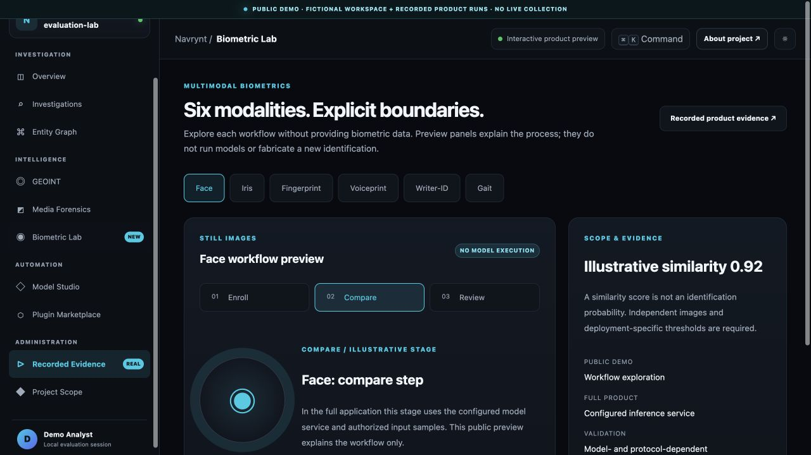
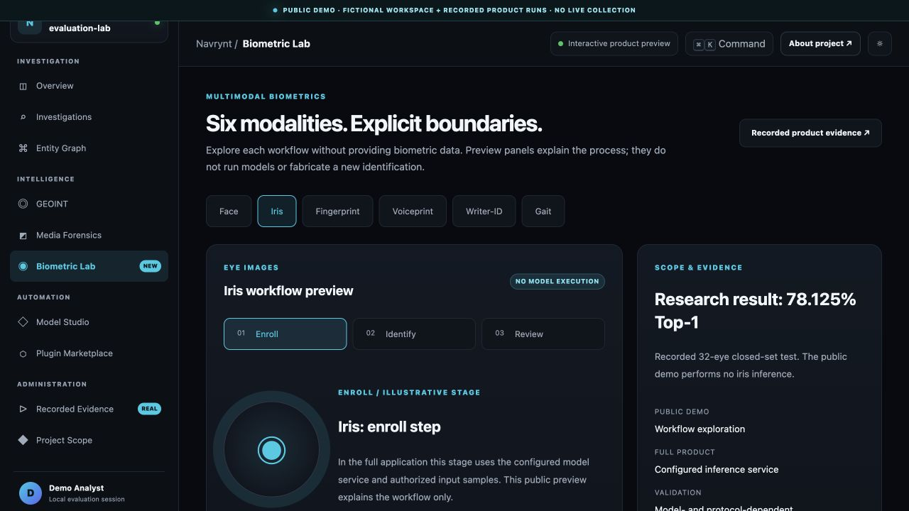
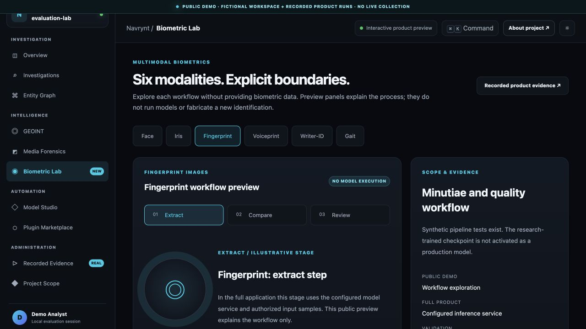
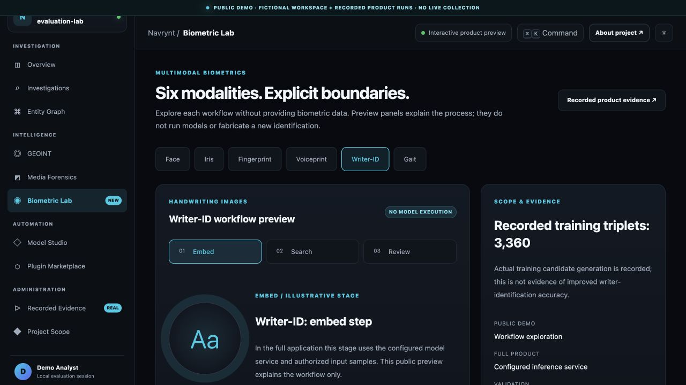
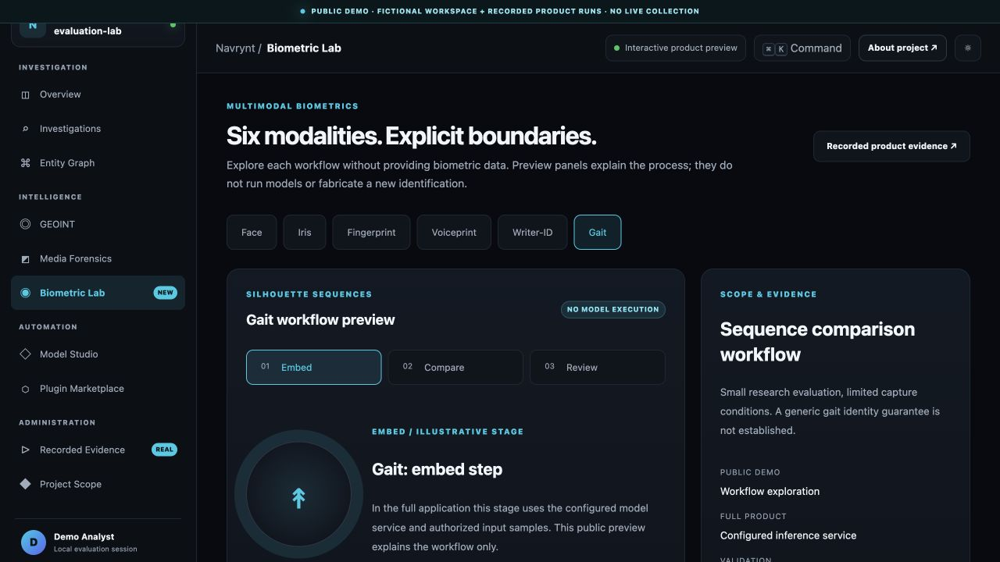

Specialist workflows.
Inspectable results.
Six separate biometric service paths, with Model Studio for supported lifecycle tasks. Explore the static workflow previews and the separately recorded voice comparison.
Prepare a research gallery and inspect its artifacts.
The static demo illustrates preparation and gallery review. No face model executes in this public preview.
Workflow illustration only. This public preview does not establish biometric accuracy or production readiness.
Explore static workflow previews ↗
Read the metrics alongside the test protocol.
The static preview explains research evaluation stages. It does not run an iris evaluation or generate accuracy metrics.
Workflow illustration only. This public preview does not establish biometric accuracy or production readiness.
Explore static workflow previews ↗
See what a process test actually verifies.
The static preview explains fingerprint quality and comparison stages. No fingerprint sample is collected or processed here.
Workflow illustration only. This public preview does not establish biometric accuracy or production readiness.
Explore static workflow previews ↗
Review enrollment and a comparison result.
A real interface interaction uses research speech examples. Language, channel, background noise and replay resistance require separate evaluation for your intended use.
Research speech examples. A successful comparison does not establish performance across languages, devices, noise or replay attacks.
Build candidate pairs for the next research step.
The static preview explains handwriting preparation and comparison. No writer identification or training executes here.
Workflow illustration only. This public preview does not establish biometric accuracy or production readiness.
Explore static workflow previews ↗
Inspect a completed model export.
The static preview explains gait workflow stages. No walking sequence is processed or exported here.
Workflow illustration only. This public preview does not establish biometric accuracy or production readiness.
Explore static workflow previews ↗
A lifecycle catalogue.
A documented test boundary.
The reviewed environment has successful run evidence for 14 of 32 catalogue operations under specific model, data and configuration combinations. Remaining operations are not represented as verified.
Review capability scope ↗Explore the workflow.
Understand the context.
Explore the interactive demo, inspect the recordings and read the project architecture.